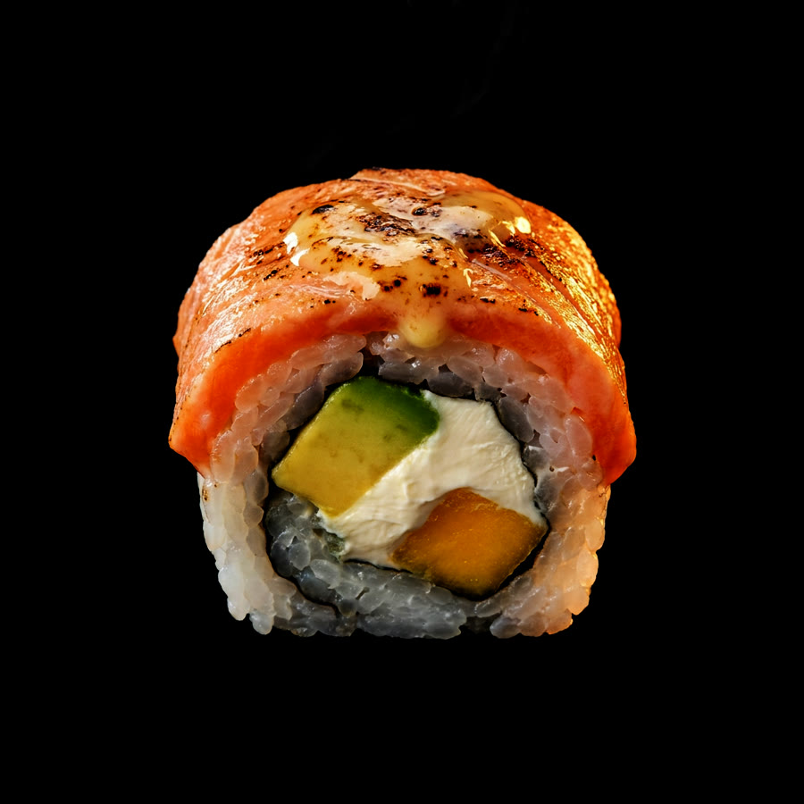
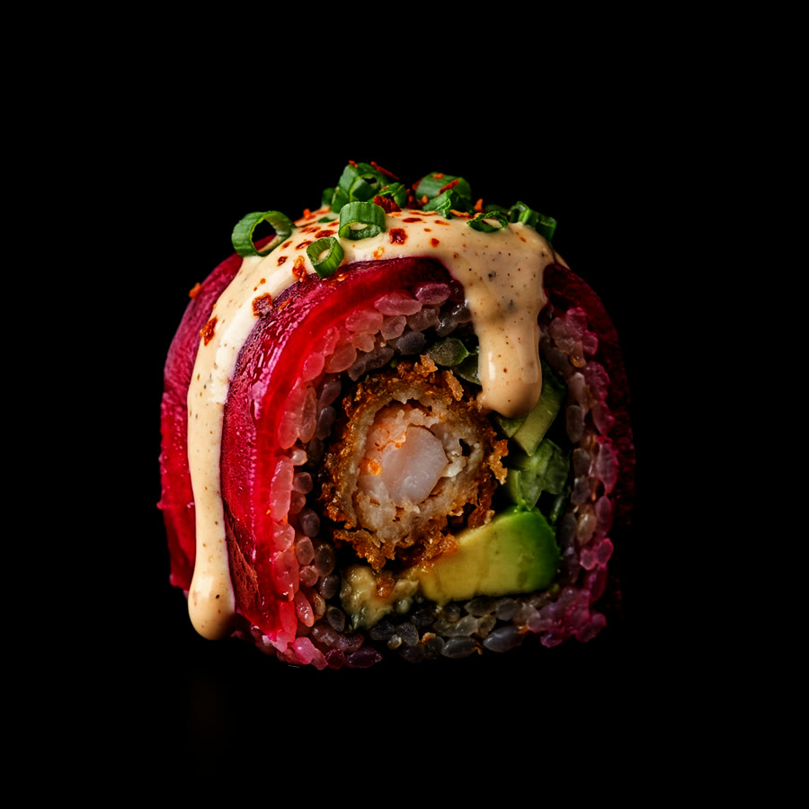
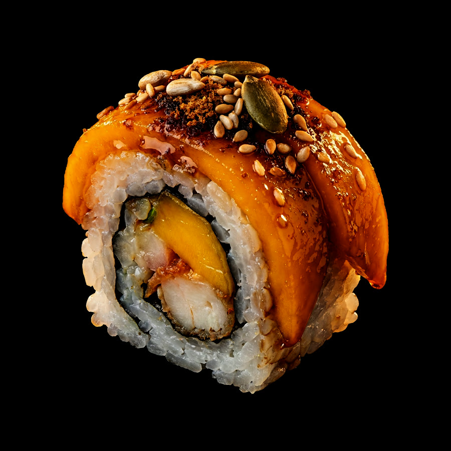
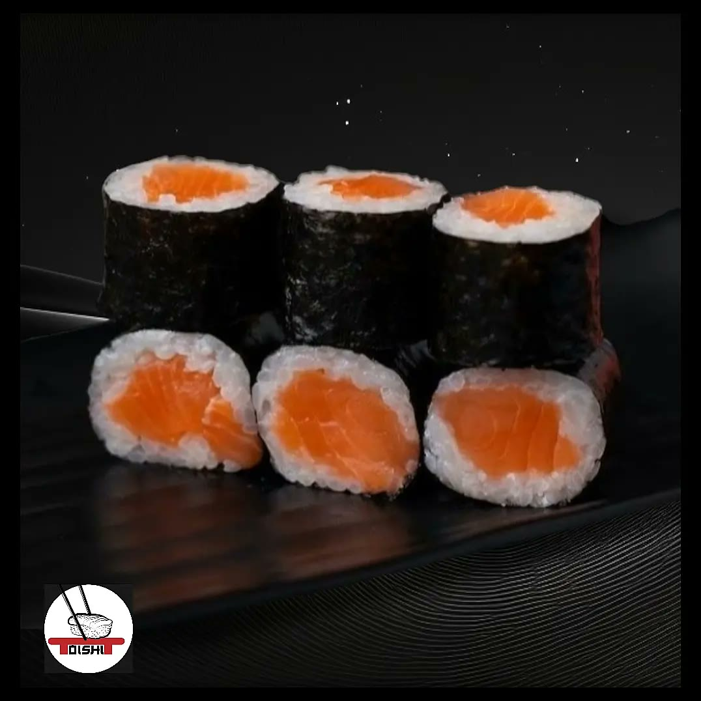
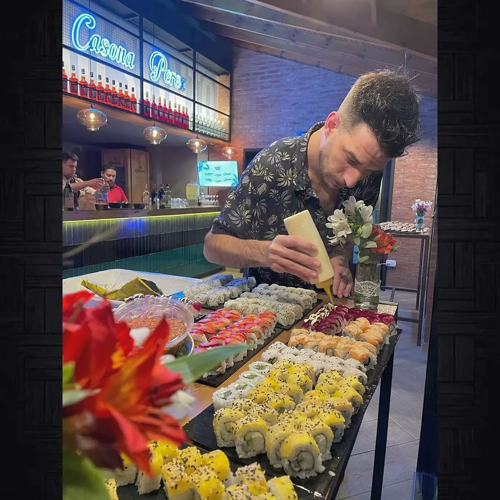
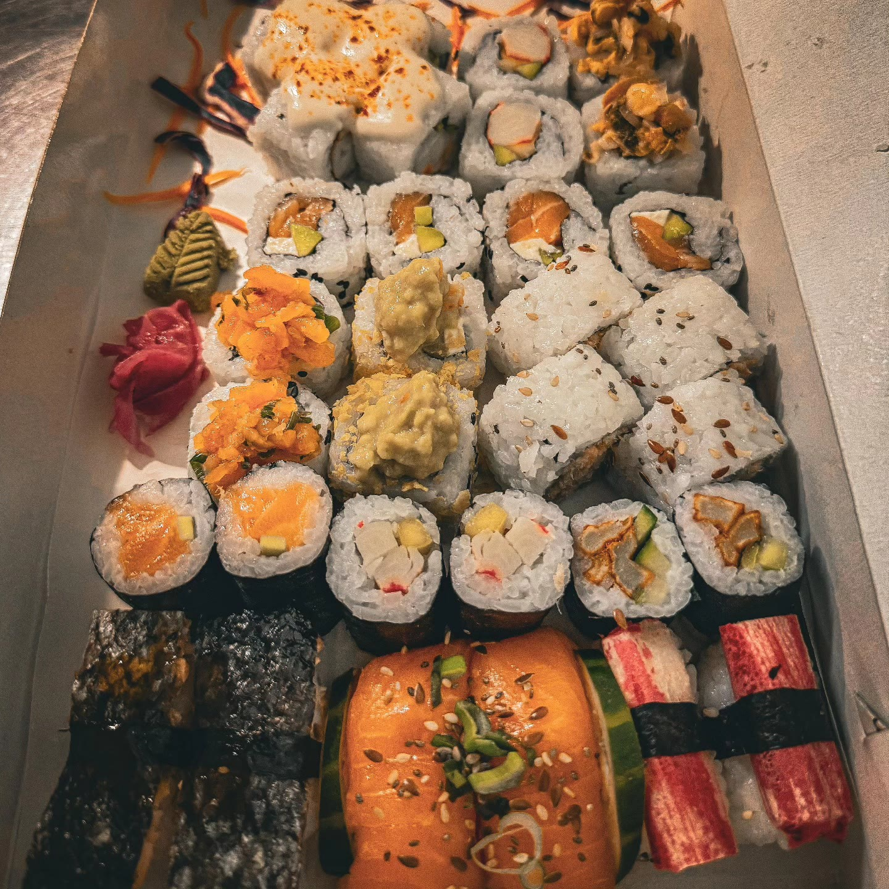

Rolls, nigiris y combinados hechos el día. Elegí lo que querés, armá tu pedido y te lo mandamos ya escrito por WhatsApp — sin capturas ni idas y vueltas.



Los que nos hicieron famosos. Cada uno con su cubierta y su salsa — los que más se piden y los que más se sacan fotos.
x4 · $12.500 · x8 · $22.000Las imágenes de esta sección son ilustrativas del plato, generadas a partir de la descripción de la carta. Al contratar el sitio se reemplazan por fotos propias de cada roll.
Los clásicos de siempre, con salmón fresco y palta. Rolls sin corte si los preferís así.
x4 · $10.000 · x8 · $19.000La pieza sola, sin nada que la tape. Salmón rosado y langostino.
Para compartir. Elegí el tamaño según cuántos sean — y si querés que elijamos nosotros, pedí el Omakase.
Lo que sale caliente de la cocina: harumakis, langostinos apanados y los hot-rolls.

Somos los mismos de siempre: antes Oishi, ahora Hugo. La misma barra, la misma gente y el mismo pescado.
Trabajamos con delivery y take away todos los días, con promos diarias y descuentos que van cambiando.

